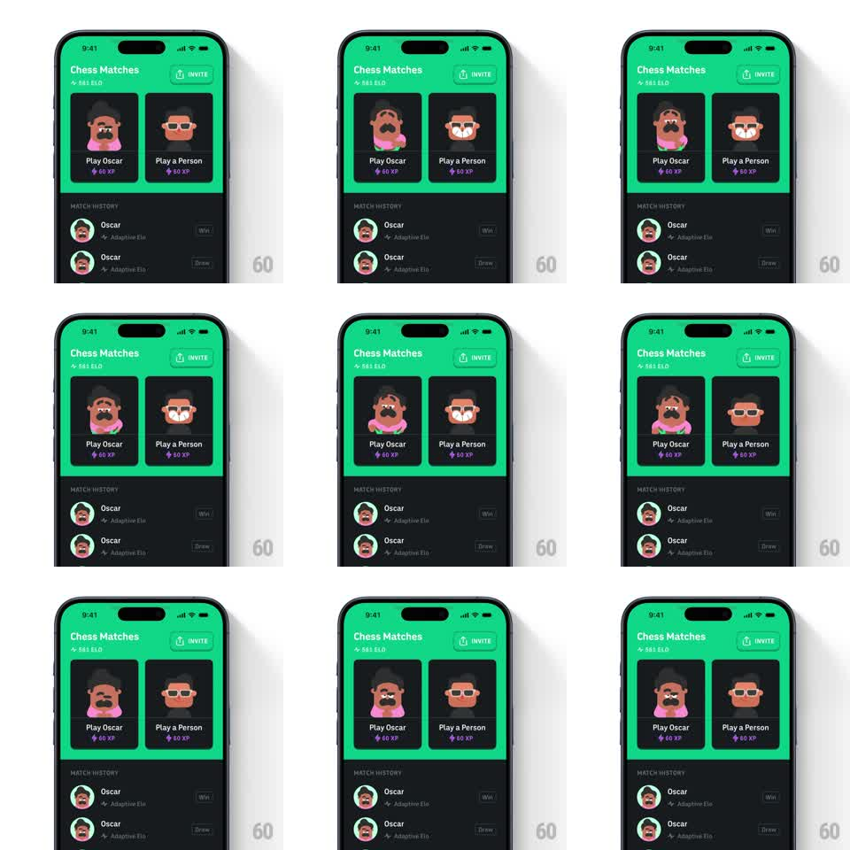

Media
Frame-by-frame

Rebuild this animation 1:1: Duolingo's Chess Matches screen - the mascot opponent (Oscar) idles on his player card with a lively loop: blinking, subtle bobbing, and an occasional smug eyebrow raise, while the green header glows softly behind the match cards.

Rebuild this animation 1:1: Duolingo's Chess Matches screen - the mascot opponent (Oscar) idles on his player card with a lively loop: blinking, subtle bobbing, and an occasional smug eyebrow raise, while the green header glows softly behind the match cards.
## Integration
Integration: stack-agnostic spec - springs given as stiffness/damping, timed motions as duration + curve; map every value to your framework and animation library of choice.
## Scene
Green-header screen: "Chess Matches" title + ELO, INVITE button, two player cards ("Play Oscar 60 XP" with the mustached mascot, "Play a Person 50 XP" with a generic avatar), match history list below.
## Motion spec
Pattern: looping character idle.
- Oscar's idle cycle (~4s): gentle bob (translateY +-3px, 2s), a double blink every ~3s (eyelids close 80ms), and an occasional eyebrow raise + smirk (every ~7s, 400ms).
- The generic person avatar has a lesser idle: bob only, no face animation.
- Header: a soft radial glow behind the cards shifts slowly (6s drift).
- Card press (interactive): pressed card scales to 0.97 (100ms), releases with a spring back (300/20).
## Calibration
- The idle must feel alive but not hyper: long quiet stretches, short expressions.
- Oscar's mustache and sunglasses get a subtle secondary wobble on the bob.
## Reduced motion
Static mascots; press states remain.
## Don't miss
- The two avatars animate at different richness levels - character vs placeholder.
- Idle loops are phase-offset between cards so they never sync.